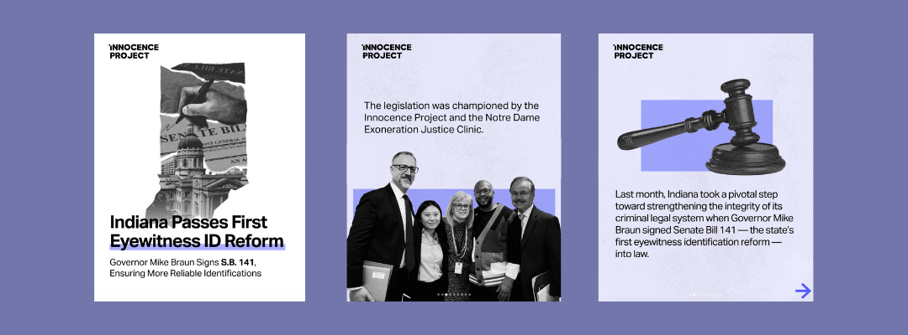
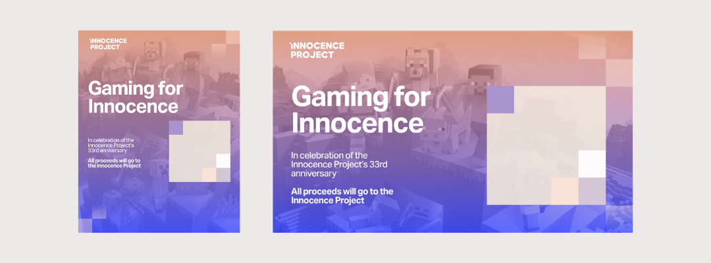
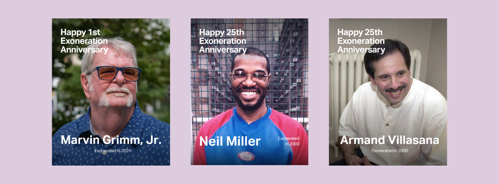
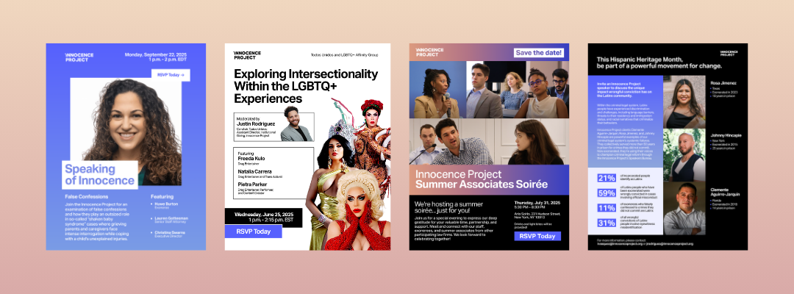
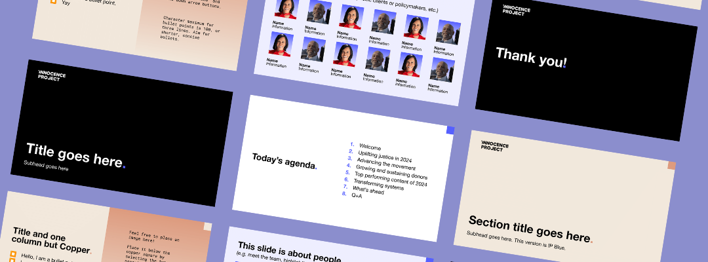

Innocence Project
TIMELINE
May 2025 - August 2025
ROLES
Creative Intern
Illustrator
Print Designer
Social Media Designer
TEAM
Communications Department
Justin Chan
Connor Sovak
TOOLS
Figma
InDesign
Photoshop
Procreate
CONTEXT
Visual storytelling for justice. As a designer for the Innocence Project, I produced a wide range
of cross-channel assets—including social media campaigns, internal communications, and print
collateral—that helped humanize complex legal issues and mobilize supporters.
My role required a balance of sensitivity and urgency: designing everything from breaking news
social graphics for urgent stays of execution to comprehensive annual reports, as well as
maintenance of strict brand integrity while driving engagement across diverse stakeholder groups.
Print Design
I was tasked with creating print materials to further the Innocence Project's fundraising initiatives.

Rack Cards
I redesigned the rack cards to align with the organization’s updated visual direction, incorporating gradients and refreshed colors, and expanded the layout to highlight additional exonerees. These cards are handed out at events, increasing awareness and ease of contact.

Holiday Cards
I reimagined the Innocence Project’s holiday cards with original illustrations that evoke joy and optimism. In doing so, I produced three concepts: one highlighting a diverse family gathering, and two neutral, seasonal designs, providing visually engaging options for donors and clients.

Innocence Advocate Stickers
Led the design of appreciation stickers to celebrate the organization’s donors, translating the brand’s mission into visually engaging, meaningful keepsakes, iterating on concepts to balance brand identity, emotional resonance, and visual appeal.
Social Media Design
I also handled social media and digital graphics for the Innocence Project, primarily for marketing and news-related posts.
Death-Row Campaign Awareness
I created graphics to raise awareness for a death-row campaign, directing traffic to our website for action items. Following this campaign, Robert Roberson's execution was fortunately stayed.

Indiana Eyewitness Identification Reform Bill
Indiana had passed an eyewitness identification reform bill, combatting a leading cause of wrongful convictions. This post highlights and contextualizes this victory to our audience of nearly 600k followers.
Just Data Series
I created posts highlighting data and upcoming events open to our audience.

Gaming for Innocence
Tentative design for a future collaboration with a gaming influencer to fundraise and raise awareness for the organization, targeted toward a younger audience and adapting our brand identity accordingly.

Exoneration Anniversaries
Every month, we highlight exonerated clients to celebrate our legal justice victories.
Coldplay Collaboration
The Innocence Project’s ambassador Chris Martin invited us to a concert. These posts relayed the experience to our audience and highlighted fundraising and awareness initiatives.
Digital Design
The bulk of my worked lived digitally, including developing templates for the company's use following the end of my internship.

Event Flyers
I designed graphics for both internal and external facing events, working in tandem with the communications, policy, and marketing arms of the non-profit.
Celebratory Slide Decks
I reworked the templates and illustrated custom assets for slide decks celebrating work anniversaries and employee birthdays.

Informational Slide Decks
I was tasked with designing a slide deck template accessible to the entire organization for internal and public facing presentations.